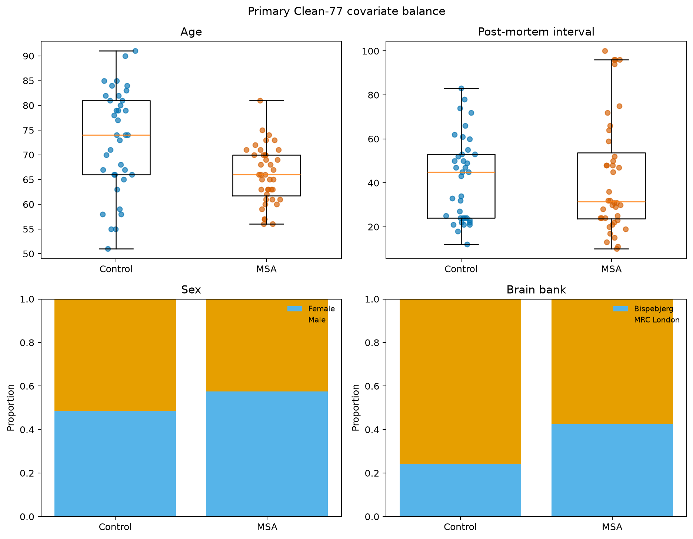
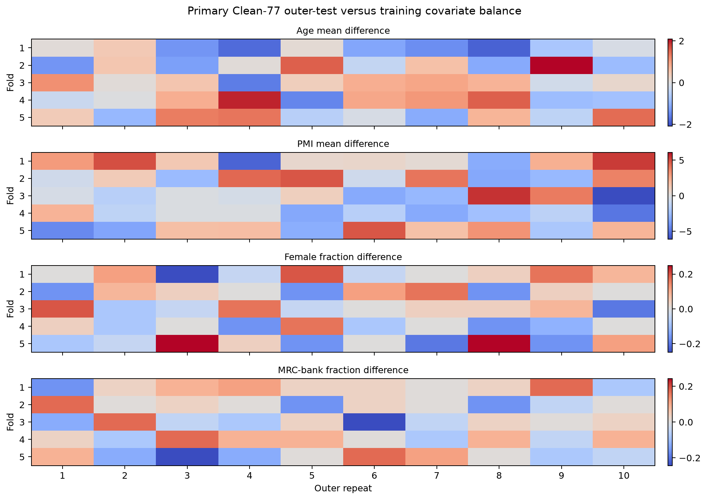

Frozen primary cohort: Clean-77. The exact same donor folds must be used for 5mC, 5hmC, and combined models.
Important: Covariate balance does not make global preprocessing safe. Imputation, variance filtering, feature selection, scaling, residualization, and tuning must still be fitted inside the outer-training data only.
Two-sided permutation tests used 20,000 permutations; four p-values were adjusted by Benjamini–Hochberg FDR. Effect sizes, not p-values alone, determine interpretation.
| covariate | control_summary | msa_summary | effect_name | effect_size | effect_magnitude | permutation_p_two_sided | fdr_bh |
|---|---|---|---|---|---|---|---|
| age | mean=72.973; sd=10.452; median=74.000 | mean=66.000; sd=5.756; median=66.000 | Hedges g | -0.827 | large | 0.0005 | 0.002 |
| pmi_hours | mean=41.946; sd=19.245; median=45.000 | mean=42.575; sd=26.425; median=31.500 | Hedges g | 0.02678 | negligible | 0.9054 | 0.9054 |
| sex | {"Female": 18, "Male": 19} | {"Female": 23, "Male": 17} | Cramer's V | 0.08863 | negligible | 0.4961 | 0.6614 |
| brain_bank | {"Bispebjerg Brain Bank": 9, "MRC London Neurodegenerative Diseases Brain Bank": 28} | {"Bispebjerg Brain Bank": 17, "MRC London Neurodegenerative Diseases Brain Bank": 23} | Cramer's V | 0.192 | small | 0.1419 | 0.2838 |


Do not use the Step 2 top-variable CpG list for supervised modeling. Every molecular preprocessing decision must be learned again inside each training fold.